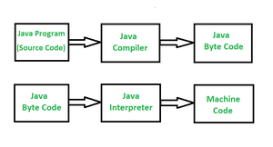
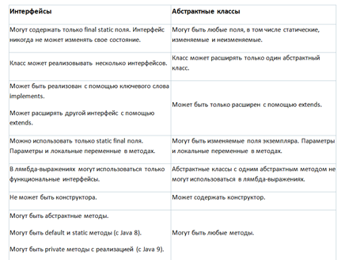

JDK
Машинный код и Байт-код
Байтовый код - это промежуточный код между исходным кодом и машинным кодом. Это низкоуровневый код,
который является результатом компиляции исходного кода, написанного на языке высокого уровня. Он обрабатывается виртуальной машиной,
такой как Java Virtual Machine (JVM).
Байтовый код - это код, который невозможно запустить после того, как он переведен интерпретатором в машинный код,
тогда он понятен машине. Он скомпилирован для запуска на JVM, и любая система, имеющая JVM, может запускать его независимо
от своей операционной системы. Вот почему Java не зависит от платформы. Байтовый код называется переносимым кодом.
Машинный код представляет собой набор инструкций, понятных непосредственно машине, и обрабатывается центральным процессором (CPU). Машинный код представлен в двоичном формате (0 и 1), который полностью отличается от байтового кода и исходного кода. Он рассматривается как представление исходного кода самого низкого уровня. Машинный код получается после компиляции или интерпретации. Его также называют машинным языком.
| N | Байтовый код | Машинный код |
|---|---|---|
| 01 | Байтовый код, состоящий из двоичных, шестнадцатеричных макрокоманд, таких как (создать, добавить, поменять местами и т.д.), И он не понятен процессору напрямую. Он предназначен для эффективного выполнения программным обеспечением, таким как виртуальная машина. Промежуточный уровень. | Машинный код, состоящий из двоичных инструкций, которые непосредственно понятны центральному процессору. |
| 02 | Байтовый код рассматривается как код среднего уровня. | Машинный код рассматривается как низкоуровневый код. |
| 03 | Байтовый код - это неисполнимый код, сгенерированный после компиляции исходного кода, и для его выполнения требуется интерпретатор. | Машинный код - это набор инструкций на машинном языке или в двоичном формате, который выполняется непосредственно процессором. |
| 04 | Байтовый код выполняется виртуальной машиной, а затем центральным процессором. | Машинный код не выполняется виртуальной машиной, он выполняется непосредственно процессором. |
| 05 | Байтовый код менее специфичен для машины, чем машинный код. | Машинный код более специфичен для машины, чем байтовый код. |
| 06 | Он не зависит от платформы, поскольку зависит от виртуальной машины, а система, имеющая виртуальную машину, может выполняться независимо от платформы. | Он не зависит от платформы, поскольку объектный код одной платформы не может быть запущен в одной и той же операционной системе. Объект варьируется в зависимости от архитектуры системы и собственных инструкций, связанных с машиной. |
| 07 | Весь исходный код не обязательно преобразовывать в байтовый код для выполнения процессором. Некоторый исходный код, написанный каким-либо конкретным языком высокого уровня, преобразуется в байтовый код, а затем байтовый код в объектный код для выполнения процессором. | Весь исходный код должен быть преобразован в машинный код перед его выполнением центральным процессором. |
ТИПЫ ДАННЫХ
STRING
ОПЕРАТОРЫ
ЦИКЛЫ и SWITCH CASE
МЕТОДЫ
КЛАССЫ и ОБЪЕКТЫ
✓ ИНТЕРФЕЙСЫ и АБСТРАКТЫЕ КЛАССЫ
Интерфейсы
Интерфейс — это контракт, который должен быть реализован конкретным классом. У интерфейса не может быть состояния, поэтому в нем нельзя использовать изменяемые поля экземпляра. В интерфейсе могут быть только неизменяемые final-поля.Если вы заметили, что ряд ваших классов содержит одинаковые методы, но с разными реализациями, то стоит использовать интерфейс. Методы интерфейса неявно абстрактны ( их не нужно явно объявлять как abstract) и обязаны быть реализованы в классе, реализующем этот интерфейс.
Интерфейс определяет поведение, в общем смысле интерфейс рассказывает о том, как работать с классом, который этот интерфейс реализует, к примеру все двери умеют закрываться и открываться и на не важно какая это дверь и как она сделана, главное, что это дверь и у неё есть наличие методов для открытия и закрытия. Интерфейс может использоваться классами, которые вообще никак не связаны с друг другом по смыслу (Comparable как пример). И самое важное множественное наследование.
Default-методы : После появления в Java 8 методов по умолчанию, некоторые разработчики решили, что интерфейсы стали абстрактными классами. Однако это не так, поскольку у интерфейсов не может быть состояния. У методов по умолчанию может быть реализация, а у абстрактных методов — нет. Методы по умолчанию — результат появления лямбда-выражений и Stream API. Важно отметить, что у default-метода должна быть реализация и default-метод не может быть статическим.
Абстрактные классы
У абстрактных классов может быть состояние в виде изменяемых полей экземпляра. Аналогично интерфейсам в абстрактных классах могут быть абстрактные методы. Абстрактный метод — это метод без тела (без реализации). Но в отличие от интерфейсов, абстрактные методы в абстрактных классах должны быть явно объявлены как абстрактные. Рекомендуется использовать абстрактный класс, когда вам нужно изменяемое состояние. Если хранить состояние класса не нужно, обычно лучше использовать интерфейс.Абстрактный класс определяет поведение и состояние. Абстрактный класс используют для наследования (т.е. мы имеем тесную связь между классами), с помощью него описывают общие черты для наследников. В нем могут находится конкретные (в интерфейсе тоже с java 8) и статические методы.
10 вопросов по абстрактным классам и интерфейсам :
1. Могут ли в языке Java у абстрактного класса быть конструкторы?
Да, в абстрактном классе в Java можно объявить и определить конструкторы. Поскольку создавать экземпляры абстрактных классов нельзя, вызвать такой конструктор можно только при формировании цепочки конструкторов, то есть при создании экземпляра конкретного класса-реализации.А какой смысл в конструкторе, если создать экземпляр абстрактного класса все равно нельзя? Дело в том, что его всё равно можно использовать для задания начальных значений общих переменных, объявленных в абстрактном классе и используемых различными реализациями. Даже если вы не объявили никакого конструктора, компилятор добавит в абстрактный класс конструктор по умолчанию без аргументов. Без него ваш подкласс не скомпилируется, поскольку первый оператор в любом конструкторе представляет собой неявный вызов super() – конструктора суперкласса по умолчанию в языке Java.
2. Могут ли абстрактные классы в языке Java реализовывать интерфейсы? Должны ли они реализовывать все методы?
Да, абстрактные классы могут реализовывать интерфейсы с помощью ключевого слова implements. Поскольку они абстрактные, то не обязаны реализовывать все методы. Наличие абстрактного базового класса и интерфейса для объявления типа является рекомендуемой практикой.Пример — интерфейс java.util.List и соответствующий абстрактный класс java.util.AbstractList. Поскольку AbstractList реализует все общие методы, то конкретные реализации (например, LinkedList и ArrayList) не должны реализовать все методы, как в случае, если бы они реализовали интерфейс List напрямую.
Это решение сочетает преимущество использования интерфейса для объявления типа и гибкость абстрактного класса для реализации всего общего поведения в одном месте.
3. Может ли абстрактный класс быть final?
Нет, не может. Ключевое слово final означает, что класс на вершине иерархии, и у него не может быть наследников. А абстрактный класс без наследников — это сферический конь в вакууме, так как нельзя создать экземпляр abstract class. Таким образом, если класс одновременно abstract и final, то у него нет наследников и нельзя создать его экземпляр.Компилятор Java выдаст ошибку, если сделать класс одновременно abstract и final.
4. Могут ли у абстрактного класса в языке Java быть статические методы?
Да, абстрактные классы могут объявлять и определять статические методы. Только необходимо следовать общим принципам создания статических методов в Java, поскольку они нежелательны при объектно-ориентированном проектировании, ведь переопределение статических методов в Java невозможно. Статические методы в абстрактном классе – явление очень редкое, но, если на это есть уважительные причины, вам ничего не помешает их использовать.5. Можно ли создать экземпляр абстрактного класса?
Нет, этого делать нельзя. Суть абстрактного класса заключается в том, что он не завершён, и его нужно завершить в классах-наследниках. То есть этот класс не готов к использованию. В нём, например, может отсутствовать реализация каких-то методов. Раз класс не готов к использованию, то нельзя создавать его объект. А вот экземпляры наследников абстрактного класса создавать можно.Компилятор Java выдаст ошибку, если программа попытается создать экземпляр абстрактного класса.
6. Обязательно ли в абстрактном классе должны быть абстрактные методы?
Нет, в абстрактном классе может не быть ни одного абстрактного метода. Сделать класс абстрактным в языке Java можно просто путем использования ключевого слова abstract при объявлении. Компилятор обеспечит выполнение всех структурных ограничений, например, запрета на создание экземпляров этого класса. Кстати, вопрос о том, должны ли быть абстрактные методы в абстрактном классе или интерфейсе – спорный. Мне представляется, что в абстрактном классе должны быть абстрактные методы, поскольку это первое, о чем думает программист, видя абстрактный класс. Это хорошо согласуется с принципом минимизации неожиданностей.7. Каковы различия между абстрактным классом и интерфейсом в Java?
Это важнейший и один из самых классических вопросов на собеседованиях по языку Java. Я не могу сосчитать, сколько раз встречал этот вопрос на собеседованиях по Java для всех уровней. Интересным этот вопрос делает, в частности, возможность для соискателя представить пример. Отвечать на вопросы по основам объектно-ориентированного программирования, например, рассказать об абстракции, инкапсуляции, полиморфизме и наследовании, легко, но, когда дело доходит до подобных тонких нюансов, претенденты на должность очень часто теряются и говорят, что первое приходит в голову. Ответ на этот вопрос тянет на отдельную статью (особенно после изменений в Java 8), тем не менее, если кратко: Интерфейс описывает только поведение (методы) объекта, а вот состояний (полей) у него нет (кроме public static final), в то время как у абстрактного класса они могут быть. Абстрактный класс наследуется (extends), а интерфейс — реализуется (implements). Мы можем наследовать только один класс, а реализовать интерфейсов — сколько угодно. Интерфейс может наследовать (extends) другой интерфейс/интерфейсы. Абстрактные классы используются, когда есть отношение "is-a", то есть класс-наследник расширяет базовый абстрактный класс, а интерфейсы могут быть реализованы разными классами, вовсе не связанными друг с другом.8. Когда имеет смысл предпочесть абстрактный класс интерфейсу и наоборот?
Это продолжение предыдущих вопросов по абстрактным классам и интерфейсам. Если вы знаете, каковы их синтаксические различия, то ответ на этот вопрос не доставит вам проблем, так как именно они служат определяющим фактором принятия решения. Поскольку в опубликованный интерфейс практически невозможно добавить новый метод, в случае потенциальной необходимости доработки лучше использовать абстрактный класс. Развивать абстрактные классы в Java проще, чем интерфейсы. Аналогично, если в интерфейсе слишком много методов и реализация их всех становится настоящей головной болью, лучше создать абстрактный класс для реализации по умолчанию. Этому паттерну следуют и в пакете коллекций Java, абстрактный класс AbstractList обеспечивает реализацию по умолчанию для интерфейса List. Используйте абстрактные классы, если: Вы хотите поделиться кодом между несколькими тесно связанными классами. Вы ожидаете, что классы, которые расширяют ваш абстрактный класс, имеют много общих методов или полей, или требуют других модификаторов доступа, кроме public (например, protected и private). Вы хотите объявить нестатические или не-final поля. Это позволяет вам определять методы, которые могут получить доступ и изменить состояние объекта, которому они принадлежат. Используйте интерфейсы, если: Вы ожидаете, что несвязанные классы будут реализовывать ваш интерфейс. Например, интерфейсы Comparable и Cloneable реализуются многими несвязанными классами. Вы хотите определить поведение конкретного типа данных, но вам не важно, кто его реализует. Вы хотите использовать множественное наследование типа.9. Что такое абстрактный метод в языке Java?
Абстрактный метод – это метод без тела. Вы просто объявляете метод, не определяя его, с использованием ключевого слова abstract в объявлении метода. Все объявленные внутри интерфейса в языке Java методы – по умолчанию абстрактные. Вот пример абстрактного метода в языке Java: public void abstract printVersion(); Теперь, для реализации этого метода необходимо расширить абстрактный класс и этот метод переопределить.10. Может ли абстрактный класс в Java содержать метод main?
Да, абстрактный класс в Java может содержать метод main, ведь это просто еще один статический метод, и абстрактный класс можно выполнять при помощи метода main, если не создавать его экземпляров.Различия между абстрактными классами и интерфейсами
С точки зрения объектно-ориентированного программирования основное различие между интерфейсом и абстрактным классом заключается в том, что интерфейс не может иметь состояния, тогда как абстрактный класс может (в виде полей экземпляра).Другое ключевое различие заключается в том, что классы могут реализовывать более одного интерфейса, но расширять только один абстрактный класс. Множественное наследование может привести к тупиковым ситуациям в коде, поэтому авторы Java решили этого избежать, отказавшись от него.
Еще одно различие состоит в том, что интерфейс может быть реализован классом или расширен другим интерфейсом, а класс может быть только расширен.
Также важно отметить, что лямбда-выражения могут использоваться только с функциональными интерфейсами (интерфейс только с одним методом), но не с абстрактными классами с одним абстрактным методом. 